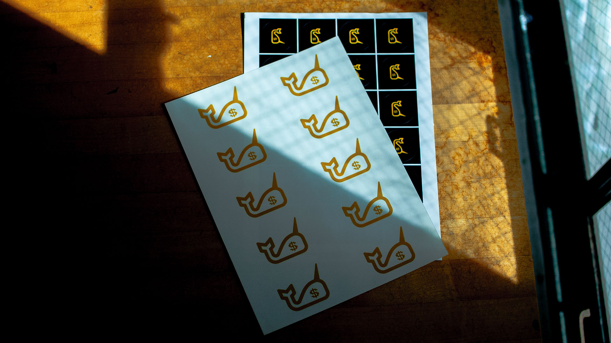

The Dashboard
The Dashboard presents a summary of The New School’s Financial Data that allows users to interact with data visualizations in order to draw comparisons and make their own analysis about the university’s revenue, expenditure, salaries, assets, and liabilities.
For a lot of student, their journey at Parsons has not been easy as the university was struggling with its finances due and the community was riddled with uncertainty. This project was created out of growing frustration amongst The New School community and the alleged disproportionate allocation of wages and funds.
Ideation
The idea was simple: solve a pain point that affects me and the community at large with the values this community has taught me: creativity, innovation, and a desire to challenge the status quo. The aim of my design thesis is to take the university’s complex financial data and present it to the Parsons community—primarily the students, parents, staff, and professors—in a clear and digestible format, with a focus on transparency and accessibility.

Data Pipeline
The New School is a 501(c)3 designated non-profit and their financial data can be publicly accessed by visiting the IRS website and looking up their data with EIN #13-3297197. The data is extracted from the IRS's website, loaded and transformed in Excel using Power Query, and visualized with Tableau.
Execution
The visualizations from Tableau are compiled into multiple dashboards and embedded on a responsive website. The website design takes a "mobile-first" approach and can be accessed by anyone anywhere. The Dashboard is a simple tool that takes the financial data from the university’s filings to the IRS and visualizes it in a cohesive and accessible format using creative visualizations, graphs, and charts. The Dashboard provides users with customizable filters to make their own analysis of the university’s financial data during the 2018–2022 period and the users also have the option to export their findings. Ultimately, The Dashboard serves as a tool leveraging the principles of information design to enhance transparency and accountability within The New School community. User can also compare key data points with other private universities based in NYC.
Campaign Materials
To raise awareness regarding the initiative and solution, deliverables were designed for the project. The goal was to distribute the deliverables with The New School community and allow them to display their support for this endeavour. Modelling credits: Manan Dua

The Dashboard was my senior year design thesis project at Parsons School of Design at The New School, part of Class of 2024. This project was made possible with the continuous support and guidance of my thesis professors, Joe Marianek and Dinah Fried. This project was built using HTML, CSS, JS, Excel, anime.js, and typewrite.js. and Tableau.